追加で採取したメダカを水槽に入れました。
2022/10/02
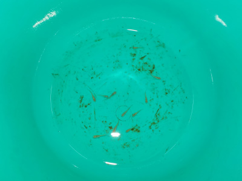
バケツで３週間は長かったかもしれないです。メダカが11匹まで減りました。
エサを与える量が少なかったようで、メダカが痩せていました。管理が悪かったです。
2022/10/02

バケツで３週間は長かったかもしれないです。メダカが11匹まで減りました。
エサを与える量が少なかったようで、メダカが痩せていました。管理が悪かったです。
2022/09/25
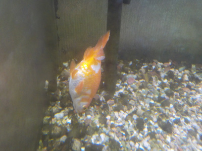
先日1匹死んだばかりですが、また1匹死にました。これが最後の1匹です。
この金魚はまだ泳ぐことが出来るので、もっと生きて欲しいです。
2022/09/21
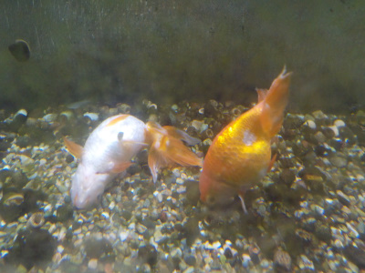
ゴロゴロと砂の上にいた金魚の1匹が死にました。
長年生きていたし、最近はもうエサを食べていなかったので仕方ないんですが残念です。
2022/09/11
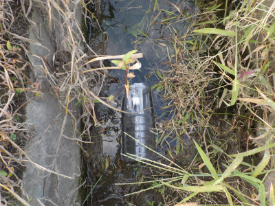
1匹減ったってことは何か問題があったんでしょう。また減る可能性も考えられます。
念のため、また排水路にメダカを捕まえに行きました。
稲刈りが終わった場所もあり、水を必要としている場所が減ったせいか水位が減っていました。
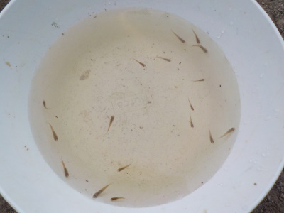
今回はエサ無しで足の振動で追い込み漁をしました。短時間で17匹捕獲です。
水が減った分逃げ場がなくなってますね。
ここの水はいつまであるんだろう？
2022/09/11
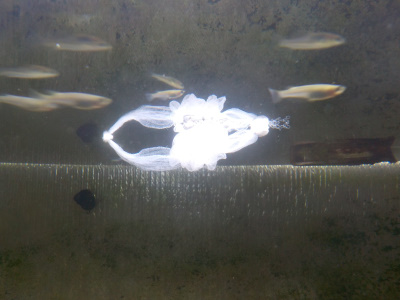
ペットショップやホームセンターでメダカの産卵床が販売しているのを見ました。こんなの入れなくても水草を入れればいいんじゃないと思ったんですが、水草の値段を見たら高くて買う気になりませんでした。
どこかのホームページで水切りネットを切って産卵床を作るっていうのがあって真似して作ったんですが、見た目がいまいちです。
器用な人は立派なものが作れるでしょうが、そうじゃない人は既製品を買うか水草を買った方がいいですね。
私は川で水草を探そうかな。
今日メダカの数を調べたら7匹になっていました。
2022/08/30
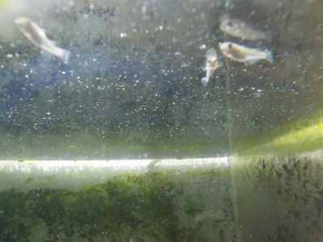
天気予報で明日からしばらく雨となっていました。雨の日の作業は嫌だなと思い、予定より早いですがメダカを水槽に入れました。
8匹全部元気に育って欲しいです。
後、メダカって動きまわっているので写真撮るの難しいですね。
2022/08/28
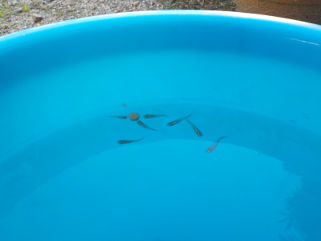
メダカが金魚のエサをつついていました。
金魚のエサは硬いみたいで、つつかれても小さくなっていない気がします。もうちょっとふやけたら食べれそうです。
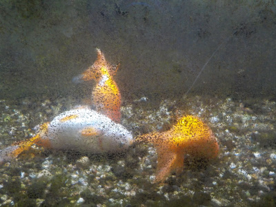
この金魚と一緒に飼う予定です。
2022/08/27
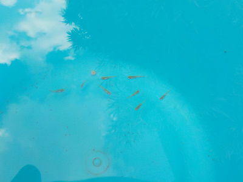
川のメダカは病気を持っていることがあるそうなので、念のため金魚用の塩を入れました。
もう1週間バケツで飼ってから水槽に入れようと思っています。
2022/08/21
今水槽で金魚を飼っているんですが、高齢のせいなのかあまり泳がななりました。
3匹いますが、3匹とも砂の上でゴロゴロとしています。
水槽の上側が空いているので、そこでメダカを飼うことにしました。
お店で売ってる赤いのや青いメダカを買ってもいいですが、私は川のメダカの色合いの方が好きなので川で捕まえることにしました。
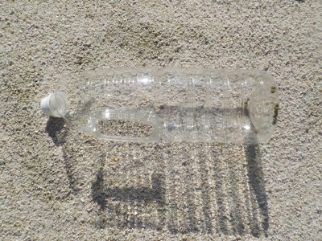
メダカの捕まえ方は色々なユーチューブを参考にしました。ジュースのペットボトルを使ったワナが多くあったので、まねて作りました。
ジュースのペットボトルが家になかったので、しょう油のペットボトルを使いました。持ち手が付いてるし丈夫なので使い易かったです。
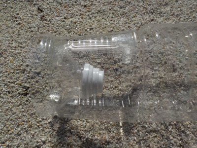
ペットボトルの上側を切って、逆さにはめ込むだけです。
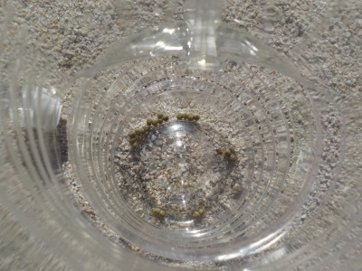
金魚のエサを入れてワナの完成。
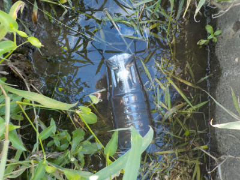
田んぼの排水路にペットボトルを設置してしばらく待ちます。
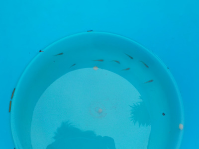
今日は8匹捕れました。8匹いたら卵を産んで増えると思うので十分かな。
I have killifish in Izumo, Japan.